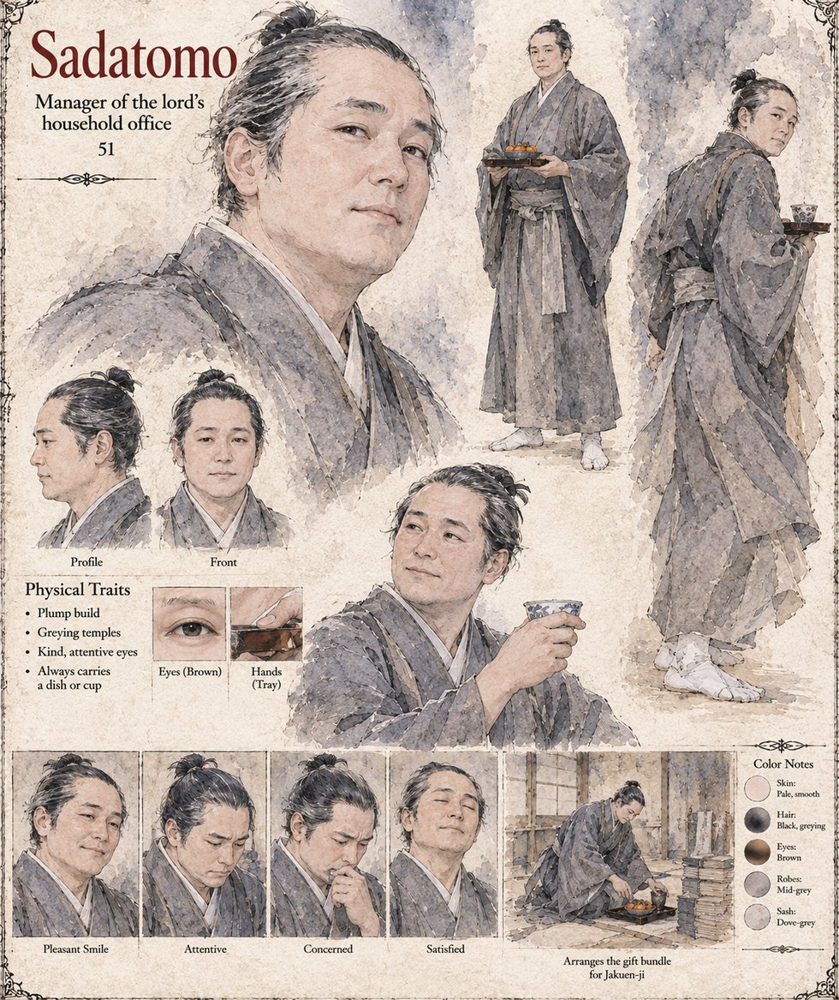

Sadatomo
Manager of the lord’s household office · keeper of the persimmons and the plum wine · arranger of the gift bundle · 51 by his sheet
The manager of the lord’s household office, competent and proud of the work. He manages the interruptions to Norimasa’s accountings the way other men manage households, with plum wine, the news of spawning koi and a dish of fresh persimmons set beside the ledger, and he will swear afterward that he never did any of it on purpose. He keeps Moritane’s supply of small things to turn over unobtrusively replenished. He arranges the gift bundle for Jakuen-ji, the one the stone travels in on its way to Ennen.
When the column arrives he leaves by a servants’ passage and resurfaces three domains over (Epilogue i). Norimasa, who is left holding the administration, dissolves the household office he managed.
The manuscript gives his competence, pride and persimmon habit; his age and every physical detail are the sheet’s. It draws him plump and light-footed at about 5 ft 4 in, with a round, smooth, unlined face, black oiled hair greying at the temples in a neat topknot, soft attentive brown eyes, a mid-grey silk household-office robe with a dove-grey sash and white split-toe socks, and always a lacquered tray or a cup in his unhurried hands. Its panels are Pleasant Smile, Attentive, Concerned and Satisfied, and its scenes show him holding a blue-and-white cup, standing with a tray of persimmons, and kneeling over the gift bundle for Jakuen-ji beside a stack of ledgers.